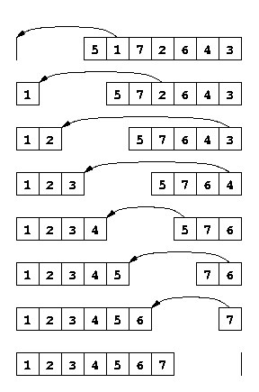

Tri par Sélection
Trier
Un tableau est dit trié lorsque ses éléments sont ordonnés (du plus petit au plus grand si ça n'est pas précisé).
Lorsqu'on trie un tableau T, le tableau résultat doit: - Être trié - Être une permutation du tableau initial
Une permutation d'un tableau T est un tableau contenant exactement les mêmes éléments avec la même multiplicité, indépendamment de leur ordre.
Par exemple:
- [1, 9, 7] est une permutation de [9, 1, 7]
- [2, 8, 7, 8] est une permutation de [8, 2, 8, 7]
Il existe plusieurs méthodes pour trier. Cette opération est fondamentale en informatique. Le tri donne à des données quelconques une propriété globale forte (un ordre total) sur laquelle on peut s'appuyer ensuite.
Les méthodes ci-dessous permettent de le faire à la façon dont on peut trier un jeu de cartes.
Il s'agit du problème SORTING pour lequel nous allons voir 2 algorithmes bien connus.
Tri par sélection
Algorithme imagé
Je veux trier des cartes
- Dans ma main droite, j'ai l'ensemble des cartes.
- Je déplace successivement sur ma main gauche la plus petite carte de la main droite.
- À l'arrivée, ma main gauche est triée et ma main droite est vide

L'invariant est ici composé de 3 propriétés:
- Les cartes de la main gauche sont toutes inférieures ou égales à celles de la main droite
- Les cartes de la main gauche sont triées
- Les cartes de la main gauche et de la main droite sont une permutation du tableau initial
INITIALISATION
L'invariant est vrai au début car :
-
Toutes les cartes de la main droite sont supérieures aux 0 cartes de ma main gauche. Cette dernière affirmation à première vue étrange vient du fait qu'en logique, c'est vrai parce que rien dans le vide ne permet de l'infirmer. De la même manière, "Tous les portables sont éteints dans la pièce" est vrai même s'il n'y a pas de portable dans la pièce. Les anglophones appellent ça une "vacuous truth", une vérité émanant de l'incapacité du vide à infirmer.
-
Ma main gauche est vide donc elle n'est pas désordonnée. Elle est donc ordonnée et par conséquent triée.
-
Dans ma main droite, j'ai l'ensemble du jeu de cartes, ni plus ni moins, donc une permutation du jeu de cartes.
CONSERVATION DE L'INVARIANT
À un moment quelconque de l'algorithme, imaginons l'invariant vrai.
- Les cartes de ma main gauche sont inférieures à celles de la main droite
- La main gauche est triée
- L'ensemble des cartes en ma possession est une permutation du jeu de cartes
Si je prends la plus petite carte de la main droite, par (1.), elle reste donc supérieure ou égale à celles de la main gauche.
Dans le processus, je ne perds ni ne gagne de cartes (3. reste vraie).
De plus, les cartes de ma main droite sont encore supérieures ou égales à celles de la main gauche (1. reste vraie)
De ce fait, si je la place à la fin de ma main gauche triée, ma main gauche reste triée (2. reste vraie)
Après avoir appliqué une étape de l'algorithme en supposant l'invariant vrai, on a donc prouvé que l'invariant est conservé.
TERMINAISON
La main droite perd exactement une carte par tour ; après n tours, elle est vide. On ne peut plus déplacer de cartes. Donc l'algorithme se termine.
L'invariant est vrai au départ, et il est conservé à chaque étape quelconque de l'algorithme. C'est donc qu'il est aussi vrai à la fin de l'algorithme.
À la fin de l'algorithme, toutes les cartes sont dans la main gauche et l'invariant est vrai.
C'est donc que ma main gauche contient une permutation triée du jeu de cartes.
Implémentation d'après l'exemple donné
Écrire une fonction tri_selection(main_gauche: list[int], main_droite: list[int]) qui applique cet algorithme.
def tri_selection(main_gauche: list[int], main_droite: list[int]):
"""
Applique le tri par sélection tel que présenté.
TANT QUE "la main droite n'est pas vide"
PRENDRE LE MINIMUM DE LA MAIN DROITE
L'AJOUTER À LA FIN DE LA MAIN GAUCHE
>>> g = []
>>> d = [5, 3, 9, 6]
>>> tri_selection(g, d)
>>> g
[3, 5, 6, 9]
>>> d
[]
"""
Nous allons maintenant faire exactement la même chose, mais avec les notations usuelles.
Algorithme usuel
- On dispose d'un tableau \(T\) de taille \(n\) noté \(T[0:n)\)
- Pour \(i\) allant de \(0\) à \(n-1\)
- \(\displaystyle imin = \arg\min_{j \in [i, n)} T[j]\)
- échanger \(T[i]\) et \(T[imin]\)
Notez que nous avons déjà résolu et étudié le problème ARGMIN
Notations
- \(T[i:j)\) représente le sous-tableau de \(T\) de l'indice \(i\) inclus à l'indice \(j\) exclu.
- Si \(i \geq j\), alors il s'agit du tableau vide.
- \(T[i:j) \leq T[k:l)\) signifie que toutes les valeurs du tableau de gauche sont inférieures ou égales aux valeurs du tableau de droite
- \(T[i] \leq T[j:k)\) signifie que la valeur \(T[i]\) est inférieure ou égale à toutes les valeurs de \(T[j:k)\)
- \(T[i:i+1)\) représente le sous-tableau à 1 élément contenant \(T[i]\)
- L'opérateur + sur des tableaux est la concaténation
- Cette notation est cohérente avec Python :
T[i:j]en Python correspond à \(T[i:j)\) - La taille d'un intervalle \([i:j)\) est simplement \(j - i\)
FORMULATION DE L'INVARIANT:
On reprend l'invariant précédent avec les notations.
Au début de chaque itération \(i\):
- \(T[0:i) \leq T[i:n)\)
- \(T[0:i)\) est trié
- \(T[0:n)\) est une permutation du tableau initial
INITIALISATION:
Pour \(i=0\):
- Tous les éléments de \(\emptyset\) sont inférieurs aux éléments de \(T[0:n)\) (Le tableau entier)
- \(T[0:0)\) est le tableau vide. Il est trié.
- \(T[0:n)\) est une permutation de lui-même.
L'invariant est donc vrai avant la première itération.
CONSERVATION
On suppose l'invariant vrai avant l'itération \(i\):
- \(T[0:i) \leq T[i:n)\)
- \(T[0:i)\) est trié
- \(T[0:n)\) est une permutation du tableau initial
On veut prouver que l'invariant est toujours vrai avant l'itération \(i+1\), donc qu'à la fin de l'itération \(i\) transformant \(T\) en \(T'\):
- \(T'[0:i+1) \leq T'[i+1:n)\)
- \(T'[0:i+1)\) est trié
- \(T'[0:n)\) reste une permutation de \(T\)
À l'itération \(i\), on calcule \(\displaystyle imin = \arg\min_{k \in [i, n)} T[k]\)
On a donc trouvé \(imin\) tel qu'on peut décomposer le tableau en:
Puis on transpose \(T[imin]\) et \(T[i]\), et notre tableau final devient:
On note immédiatement que (3.) est conservé car on ne fait que transposer 2 éléments de \(T\). \(T'\) reste donc une permutation de \(T\).
Par définition de \(imin\), et sachant (1.)
Donc \(T'[0:i+1) \leq T'[i+1:n)\), et donc (1.) est conservé.
Mais \(T[imin]\) est aussi supérieur ou égal aux éléments triés de \(T[0:i)\) car il appartient à \(T[i:n)\) qui, par hypothèse (1.), contient des éléments tous supérieurs ou égaux à ceux de \(T[0:i)\). Donc en le rattachant à \(T[0:i)\), on ne brise pas le tri. \(T'[0:i+1)\) est donc trié et (2.) est conservé.
L'invariant est donc conservé.
TERMINAISON
Variant de boucle: À chaque itération, \(i\) augmente de 1, et on a \(i \in [0, n)\). La boucle itère exactement \(n\) fois et termine nécessairement.
À la fin de la dernière itération pour \(i=n-1\), l'invariant est conservé. Après cette dernière itération, on a \(i=n\) et l'invariant reste vrai:
- \(T[0:n) \leq T[n:n)\) où \(T[n:n) = \emptyset\)
- \(T[0:n)\) est trié
- \(T[0:n)\) est une permutation du tableau initial
La propriété (1.) est vraie car \(T[n:n)\) est vide.
Les propriétés (2.) et (3.) impliquent directement que le tableau complet \(T[0:n)\) est une permutation triée du tableau initial.
À la fin de l'exécution de l'algorithme, le tableau est donc une permutation triée du tableau initial.
L'algorithme est totalement correct. \(\square\)
Complexité
Quelle est la complexité de l'algorithme de tri par sélection ?
Analyse:
- La boucle principale itère \(n\) fois (pour \(i \in [0, n)\))
- À chaque itération \(i\), on recherche le minimum dans \(T[i:n)\), ce qui nécessite \(n-i\) comparaisons
- Nombre total de comparaisons: \(\sum_{i=0}^{n-1} (n-i) = \sum_{k=1}^{n} k = \frac{n(n+1)}{2}\)
La complexité temporelle est donc \(\mathcal{O}(n^2)\) dans tous les cas.